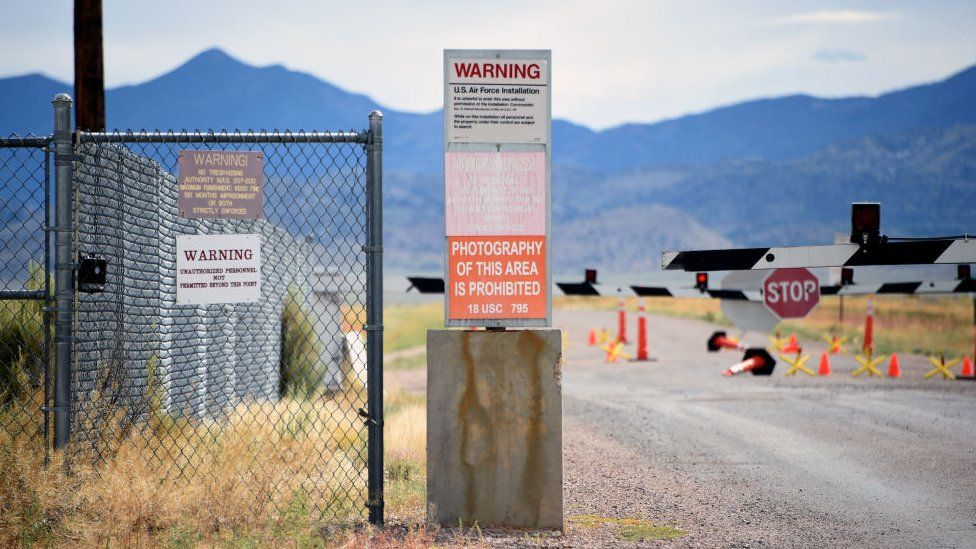

.png)

Area 51: Pusat Alien Amerika?
Banyak spekulasi menyebut Area 51 sebagai pusat penelitian makhluk luar angkasa. Sejumlah saksi mata mengklaim melihat benda terbang asing yang tidak dikenal di sekitar wilayah ini Pada 1989, seorang pria bernama Robert Lazart mengklaim bahwa dia pernah bekerja di pusat teknologi alien di sebuah lokasi yang disebut Area 51. Dikutip dari BBC, 20 September 2019, Lazart mengeklaim telah melihat beberapa foto medis dari alien dan menyebut bahwa pemerintah menggunakan fasilitas itu untuk memeriksa UFO. Kemudian, pada 1947, beredar klaim bahwa di pangkalan Area 51 terdapat pesawat luar angkasa dan alien sebagai pilotnya, setelah pesawat itu jatuh di Roswell, negara bagian New Mexico. Adapun pesawat jatuh yang dimaksud sebenarnya adalah balon cuaca. Itu adalah teknologi radiosonde berbentuk balon yang berfungsi mengetahui tekanan atmosfer, suhu, kelembaban dan kecepatan angin. Pemerintah AS menegaskan tidak ada alien. Artikel ini telah tayang di Kompas.com dengan judul "Mitos Area 51: Awal Mula Konspirasi hingga Militer AS .
Sumber: KOMPAS.COM
.jpg)
Apakah Bumi Sebenarnya Datar?
Teori konspirasi tentang bumi datar masih terus diperbincangkan. Para penganutnya meyakini bahwa NASA dan pemerintah dunia telah menyembunyikan fakta bentuk asli bumi. di pertengahan 1800-an, Samuel Rowbotham muncul dengan pendapat lain. Ia mengumumkan bahwa Bumi berbentuk datar. Bahkan, 1,5 abad kemudian, lahirlah Masyarakat Bumi Datar (Flat Earth Society, FES) di Internet. Di Indonesia, bahkan Lembaga Penerbangan dan Antariksa Nasional (LAPAN) baru-baru ini juga ditantang agar mengakui bahwa Bumi berbentuk datar. Tantangan itu disertai dengan sejumlah “teori” pendukung. Dikutip dari listverse.com pada Rabu (11/1/2017) sudah cukup banyak teori dilontarkan oleh para pencinta pandangan bumi datar.
sumber: liputan6.com

Pendaratan di Bulan: Hoax Terbesar Abad Ini?
Beberapa analis menyebut bahwa video pendaratan bulan buatan NASA pada 1969 sebenarnya dibuat di studio film demi memenangkan perang luar angkasa melawan Uni Soviet. Tetapi masih ada sejumlah orang yang meyakini bahwa manusia tidak pernah menginjakkan kaki di Bulan. Badan Luar Angkasa Amerika (NASA) melaporkan bahwa berdasarkan jajak pendapat, jumlah warga Amerika yang percaya bahwa Pendaratan Bulan dipalsukan, tetap konsisten di kisaran 5%. Angka ini memang rendah, tetapi cukup untuk membuat teori konspirasi tetap hidup.
Sumber: BBC NEWS INDONESIA